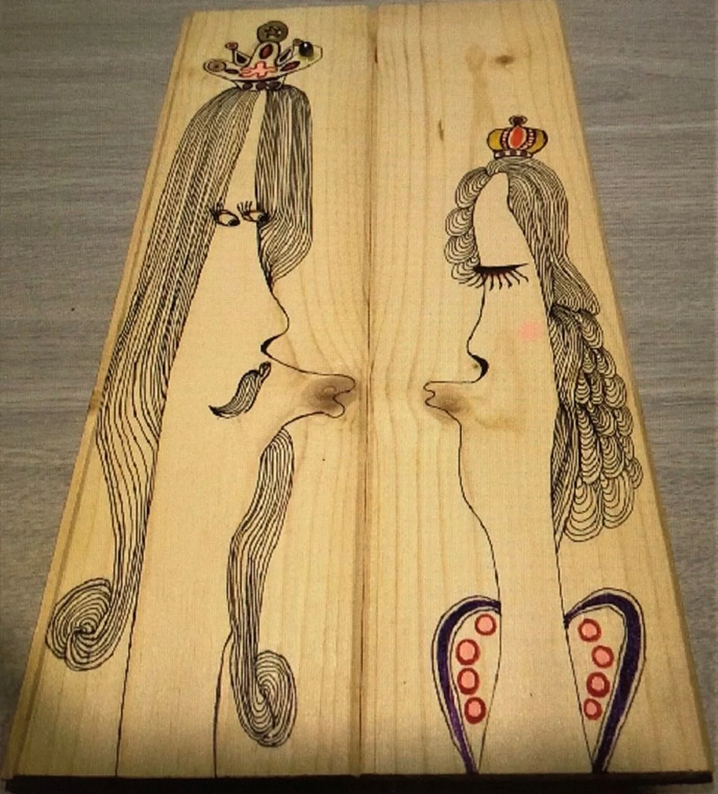
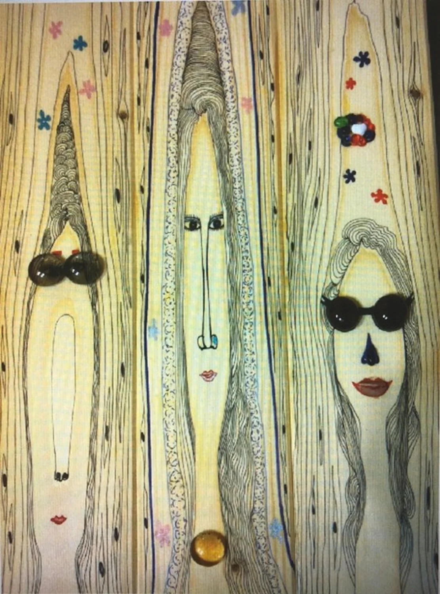
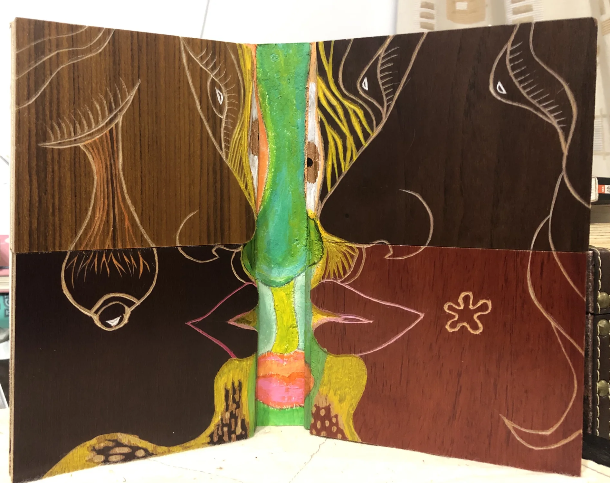
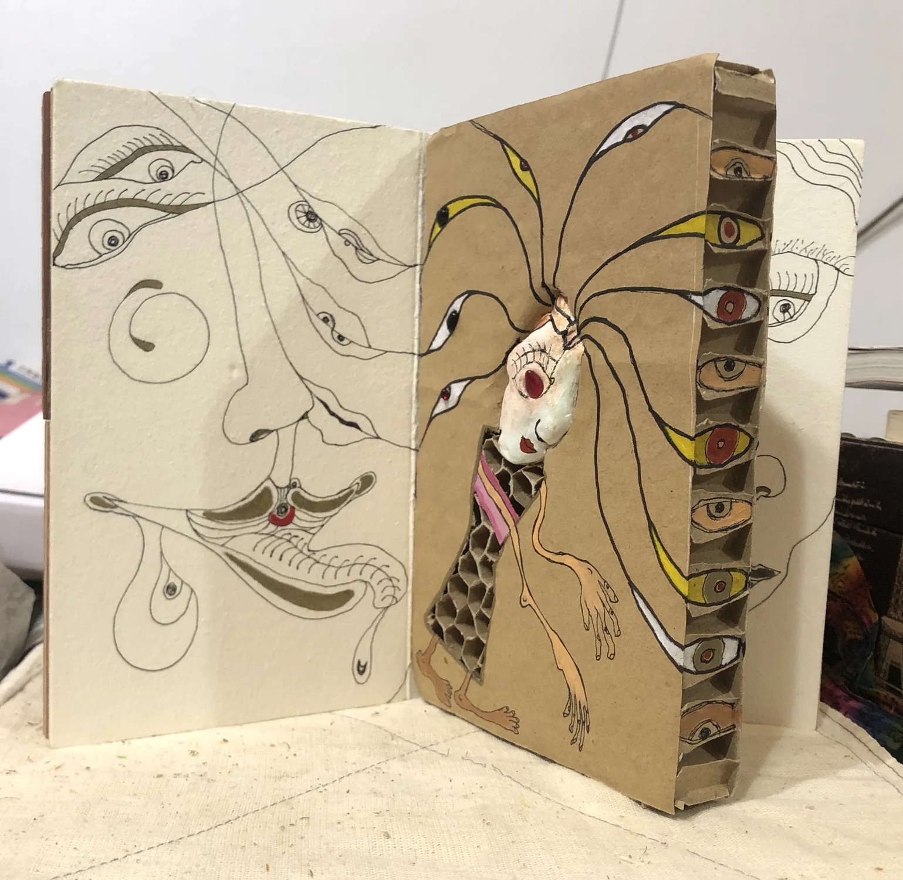
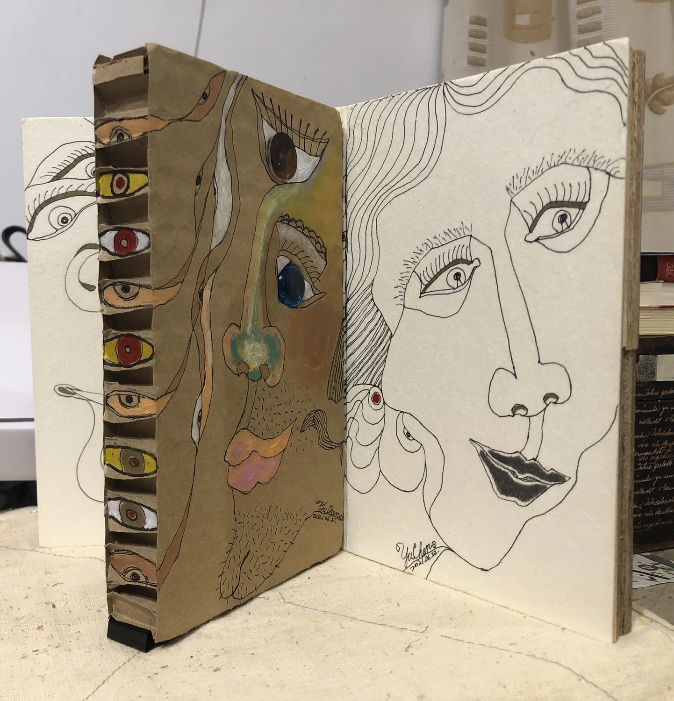

04.3 / 早期創作 Early Works
木之始 Wood Origin
木紋、刀痕與自然形體，是生命宇宙更早顯現的起點。 Wood grain, carved marks, and natural forms as early origins of life.
木之始
木紋中的角色與書頁
木材的紋理、板片與可翻閱的結構，使早期角色不只被畫出，也開始具有重量、關係和可以被打開的內部空間。
國王與皇后

三姊妹

被視之書：關於我



木之始讓木材的重量、紋理與人物寓言成為早期創作的一條支線，也讓「觀看自己」第一次具有書頁與物件的形式。
這裡的木板像一種安靜的前史，將後來的浮雕、容器與人格結構提前埋入材料之中。